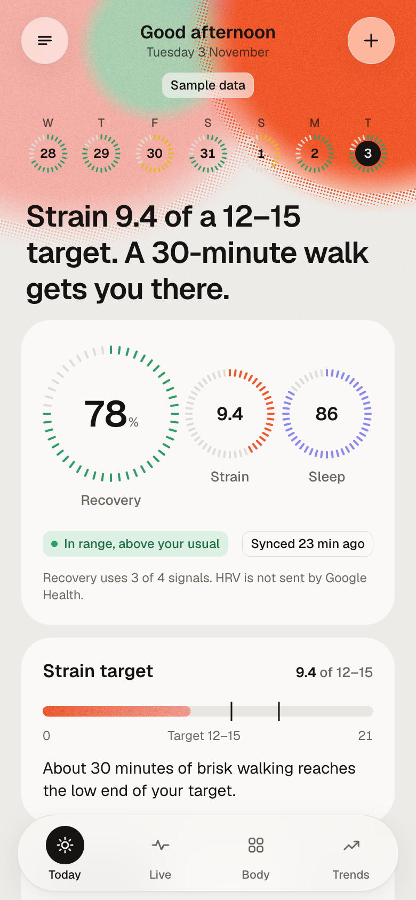
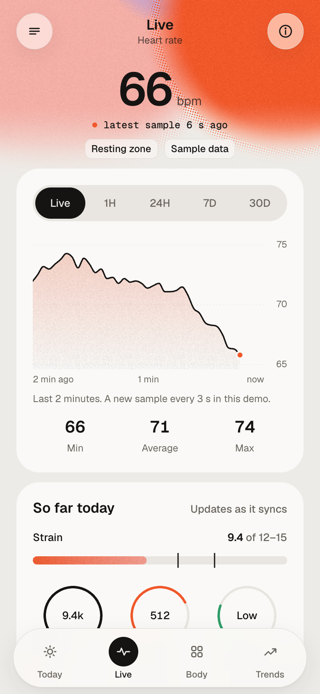
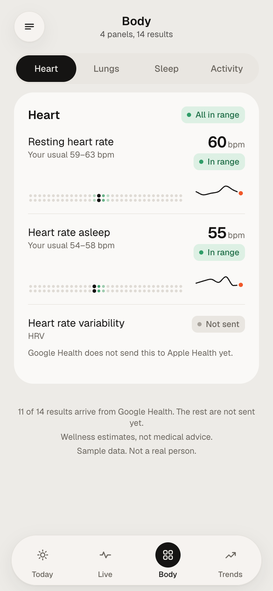
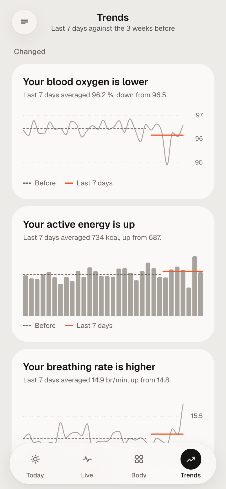

MRH1 turns the readings Google Health sends to Apple Health into scores, lab-style body panels and a live heart-rate view, each one explained against your own usual range. No subscription, no account, and nothing leaves your iPhone.
The demo and every screenshot use synthetic sample data, not a real person’s readings.


Most band apps either hide the numbers behind a subscription or show them without context. MRH1 does neither.
No servers, no analytics, no third-party code. It reads Apple Health on your iPhone and does every calculation there.
Each result sits against your own 30-day range, with the weights behind Recovery and a plain “how it’s computed” page.
Google Health doesn’t send HRV, skin temperature or VO2 max yet. MRH1 says “Not sent” and always shows when it last synced.
No API keys and no cloud account. The app reads what the Google Health app already writes into Apple Health.
Heart rate, motion, SpO2 and sleep stages from the band.
Syncs the band and writes the readings to Apple Health, minutes to hours later.
MRH1 asks for read-only access to the types it uses.
Recovery, strain, sleep, stress, body panels, trends and the Live tab.
Warm paper, ink type and one ember accent. Green, yellow and red only ever mean a result. Screens from the web replica, on synthetic sample data.


“Normal” means normal for you: ranges come from your own last 30 days, and need about 14 days to settle.
| Result | Source | What it tells you |
|---|---|---|
| Recovery | Computed | 0–100 %. Resting heart rate, sleep and breathing against your usual. |
| Strain | Computed | 0–21. All-day heart-rate load, with a target that follows your recovery. |
| Sleep score | Computed | Duration against need, deep and REM share, time awake. |
| Stress | Computed | Hourly. Heart rate raised above resting while you are still. |
| Resting heart rate | Fitbit Air | Lowest steady heart rate during sleep. |
| Breathing rate | Fitbit Air | Breaths per minute asleep. Very steady night to night. |
| Blood oxygen (SpO2) | Fitbit Air | Oxygen saturation asleep, for wellness only. |
| Sleep stages | Fitbit Air | Deep, core, REM and awake time. |
| Steps and energy | Fitbit Air | Daily movement and active energy. |
| HRV, skin temperature, VO2 max | Not sent | Google Health doesn’t send these to Apple Health yet. Shown as “Not sent”, never as zero. |
The app has no networking code. It reads Apple Health read-only, keeps its history and journal on the device, and makes its notifications there too.
Wellness estimates, not medical advice. MRH1 is not a medical device and does not diagnose anything. See a doctor about any symptoms.
Works with Fitbit Air via Google Health and Apple Health. Not affiliated with Google. Fitbit and Fitbit Air are trademarks of Google LLC.
The demo and screenshots use synthetic sample data.
Designed and built in conversation with Claude (Anthropic): sensor research, metric design, the SwiftUI code and the Metal and WebGL shaders. Part of an AI portfolio, alongside AI-skills.